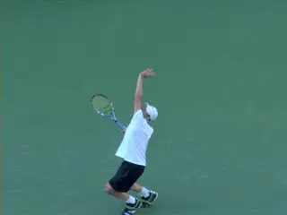
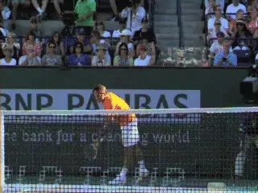

← Bài trước: 1-2 Rhythm - The Backhand Slice | 🏠 Classic Lessons Trang chủ | Bài tiếp: → 1-2 Rhythm The Single-Handed Backhand
1-2 Rhythm: Cú giao bóng
Thư viện kiến thức quần vợt thống nhất — Cơ bản, Phân tích kỹ thuật, Thư viện tham khảo và nhiều hơn nữa
1-2 Rhythm: Cú giao bóng
Nick Wheatley

Những điểm kiểm tra thực sự quan trọng cho hai giai đoạn nhịp điệu trên cú giao bóng là gì?
Một thành phần quan trọng trong việc học và thực hiện cú giao bóng là những gì tôi gọi là 1-2 Rhythm. Điều này tương tự như 1-2 Rhythm trên các cú đánh đất, như chúng ta đã thảo luận trong các bài viết trước đó. (Nhấp vào đây để xem bài viết đầu tiên trong loạt bài đó.)
1-2 Rhythm là chìa khóa để định thời gian và cũng là sự chuyển giao năng lượng tuyệt vời trên tất cả các cú đánh. Nhưng nó có thể quan trọng hơn nhiều trên cú giao bóng, cú đánh duy nhất trong quần vợt thường được liên kết với nhịp điệu.
Trong bài viết này, tôi trình bày một quan điểm khác về những khoảnh khắc quan trọng trong cú giao bóng. Những điểm kiểm tra mới này sẽ mang lại cho bạn một cách tiếp cận khác, cụ thể và mạnh mẽ để điều chỉnh cú giao bóng của mình và tối đa hóa không chỉ sức mạnh mà còn độ tin cậy.
2 Giai đoạn
Để ôn lại khái niệm, 1-2 Rhythm chia các cú đánh thành hai giai đoạn hoặc phần. Phần 1, giai đoạn chuẩn bị, là mượt mà và cẩn thận. Phần 2, giai đoạn thực hiện, là nổ lực và đầy năng lượng.
Vậy những giai đoạn giao bóng là gì? Giai đoạn 1 bắt đầu từ lúc bắt đầu mở vợt và kết thúc khi tay ném bóng được kéo dài và chân đã co hoàn toàn. Giai đoạn 2 sau đó bắt đầu với sự nổ lực của chân lên vào cú đánh. Việc hiểu được sự chuyển tiếp này giải quyết được nhiều sự nhầm lẫn mà người chơi gặp phải về thời gian của các vị trí quan trọng và cách thực hiện chúng một cách nhất quán.
Giai đoạn 1

Khoảng thời gian cho Giai đoạn 1 thay đổi đáng kể đối với những tay vợt giao bóng hàng đầu, nhưng tất cả đều mượt mà và cẩn thận.
Mọi người chơi đều có một quá trình nghi thức mà họ đi qua trước khi bắt đầu chuyển động giao bóng, một số phức tạp và phức tạp hơn những người khác. Giai đoạn 1 bắt đầu sau khi hoàn thành những nghi thức này.
Đây là lúc các cánh tay bắt đầu di chuyển. Thông thường đây là sự di chuyển của cánh tay xuống một chút trước khi chia tách. Tay ném bóng sau đó di chuyển xuống và lùi lại, rồi di chuyển lên để thực hiện cú ném, mặc dù lượng di chuyển xuống và lùi lại khác nhau đáng kể giữa các tay vợt cá nhân. <A J-Curve hoặc cung >
Đồng thời, việc mở vợt bắt đầu. Hình dạng của việc mở vợt hoặc backswing cũng có thể thay đổi đáng kể, từ một số biến thể của hình dạng bán nguyệt đến các chuyển động bị rút ngắn trong đó chuyển động ban đầu của bàn tay và vợt thực sự là hướng lên.
Điều gì kết nối tất cả những biến thể này lại với nhau là cảm giác chuyển động mượt mà và cẩn thận, bản chất của Giai đoạn 1. Cảm giác này cũng áp dụng cho chuyển động ném bóng, trong đó cánh tay rơi xuống rồi kéo dài chậm và đều. Sự phóng thích quả bóng hầu như không gây gián đoạn tốc độ của cánh tay ném bóng khi quả bóng rời khỏi ngón tay.
Cảm giác chậm và cẩn thận cũng áp dụng cho việc mở vợt. Các nghiên cứu định lượng cho thấy rằng không có quá nhiều gia tốc của vợt trong khi người chơi di chuyển qua Giai đoạn 1. Chuyển động đến vị trí cúp có thể mất 2 giây hoặc hơn, và tốc độ đầu vợt trong khoảng thời gian này thường không quá 10 dặm/giờ. (Nhấp vào đây.)

Lưu ý sự khác biệt về vị trí cánh tay ném bóng và vợt của các tay vợt trẻ hàng đầu ở cuối Giai đoạn 1.
Chuyển tiếp
Có thể hợp lý cho rằng chuyển tiếp giữa Giai đoạn 1 và Giai đoạn 2 xảy ra tại vị trí cúp, vì vậy nhiều điều đã được nói về nó trong việc huấn luyện và giảng dạy. Thực tế, khởi đầu thực sự của Giai đoạn 2 là sự nổ lực của chân, đồng bộ với việc kéo dài cánh tay ném bóng.
Video tốc độ cao cho thấy vị trí cúp của các tay vợt hàng đầu đơn giản là không tương ứng với sự nổ lực bắt đầu của Giai đoạn 2. Sự khác biệt về hình dạng và thời gian của việc mở vợt của các tay vợt vĩ đại ảnh hưởng đến khi nào người chơi đạt được vị trí cúp. Và đối với nhiều hoặc hầu hết, vị trí cúp đơn giản là không tương ứng trực tiếp với việc co chân hoàn toàn.

Mặc dù có sự khác biệt về Giai đoạn 1, nhưng thời gian của Giai đoạn 2 nổ lực là như nhau.
Điều gì tương ứng là việc kéo dài cánh tay ném bóng. Các tay vợt khác nhau kéo dài cánh tay ném bóng của họ nhiều hơn và ít hơn trực tiếp hướng lên - hoặc thậm chí một chút lùi lại. Tuy nhiên, những biến thể này, hai điểm kiểm tra được đồng bộ hóa tại điểm bắt đầu của Giai đoạn 2. Điều này có thể gây bất ngờ, nhưng chúng ta có thể thấy điều này rõ ràng nếu đo thời gian thực của hai giai đoạn cho các tay vợt vĩ đại.
Hãy sử dụng ba tay vợt giao bóng vĩ đại có những sự khác biệt đáng kể về chuyển động Giai đoạn 1 và thời gian: Andy Roddick, Pete Sampras và Roger Federer. Có những sự khác biệt lớn về tổng thời gian chuyển động của ba nhà vô địch này. Nhưng những sự khác biệt này đều nằm trong thời gian của Giai đoạn 1.
Điều đáng ngạc nhiên và quan trọng là thời gian của Giai đoạn 2 từ lúc nổ lực bắt đầu với chân đến điểm tiếp xúc gần như giống hệt nhau cho tất cả ba tay vợt.
Như bạn có thể dự đoán, Andy là người nhanh nhất trong Giai đoạn 1. Để hoàn thành Giai đoạn 1 - đạt được việc kéo dài cánh tay ném bóng và co chân hoàn toàn - mất anh khoảng 0,44 giây. Pete mất nhiều thời gian hơn để đạt được vị trí tương tự khoảng 0,68 giây. Federer mất nhiều thời gian nhất 0,88 giây, gần gấp đôi thời gian của Andy. Tại thời điểm này, tất cả đã kéo dài cánh tay ném bóng và đạt được độ uốn gối tối đa. Nhưng lưu ý sự khác biệt về cánh tay và vợt.
Cánh tay của Andy nổi tiếng ở phía bên phải của anh. Pete gần vị trí cúp hơn nhưng chưa đến đó. Federer gần hơn Pete một chút, nhưng vẫn còn thiếu vị trí cúp cổ điển.
Bây giờ hãy xem thời gian của Giai đoạn 2. Quan sát chân thẳng và nổ lực. Thời gian đến điểm tiếp xúc là giống hệt nhau cho tất cả ba tay vợt. Thời gian là bao nhiêu? Hơi hơn một phần ba giây, chính xác là 0,36 giây.
Rõ ràng, Giai đoạn 2 là điều khởi đầu sự chuyển giao năng lượng tạo ra tốc độ vợt lớn, sức mạnh và xoáy.
Khi chân nổ lực lên và về phía trước, cơ thể cũng đang xoay. Vợt tăng tốc độ khi di chuyển vào vị trí rơi, rồi tăng tốc đáng kể lên đến điểm tiếp xúc. Sự nổ lực của chân đẩy cả hai chân rời khỏi mặt sân, và người chơi hạ cánh với chân trước bên trong đường baseline.
Điểm chuyển tiếp này và sự nổ lực tiếp theo là quan trọng đối với người chơi ở mọi cấp độ để kiểm soát 1-2 Rhythm. Vì vậy, hãy tìm điểm chuyển tiếp của riêng bạn.
Cảm nhận việc mở vợt chậm và mượt mà và sự rơi của trọng lượng trong uốn gối của bạn. Tìm cùng cảm giác trong việc ném và điểm kéo dài của chuyển động ném bóng của bạn. Học cách làm cho những điểm kiểm tra này tương ứng. Bây giờ nổ lực! Tất nhiên, bạn muốn đảm bảo các vị trí quan trọng khác như vị trí rơi vợt và điểm tiếp xúc nằm trong các tham số kỹ thuật tốt.
Nhưng đừng lo lắng về chúng hoặc khi nào bạn thực sự đang thực hiện vị trí cúp khi bạn đang giao bóng trong trận đấu. Bên dưới áp lực, cảm giác rõ ràng về hai giai đoạn này sẽ mang lại cho bạn tự tin và giảm bớt lo âu và áp lực.
Cú giao bóng thứ hai

Sự phân biệt giữa các giai đoạn là giống hệt nhau cho cả cú giao bóng thứ hai.
Không có sự khác biệt lớn nào về cách 1-2 Rhythm hoạt động giữa cú giao bóng thứ nhất và thứ hai, hoặc thậm chí giữa cách nó hoạt động giữa các cú giao bóng phẳng, cắt bóng hoặc xoáy bóng. Đường đi của vợt từ vị trí rơi đến điểm tiếp xúc sẽ thay đổi tùy thuộc vào loại giao bóng mà người chơi đang cố gắng thực hiện, nhưng 1-2 Rhythm sẽ vẫn như cũ, cũng như chức năng của nó để tạo ra sức mạnh và/hoặc xoáy trên giao bóng một cách đáng tin cậy và hiệu quả.
Nhớ lại, 1-2 Rhythm được xây dựng trên cơ sở cơ thể và cánh tay đánh bóng thư giãn. Phát triển nên được thực hiện thông qua việc sử dụng các thuật ngữ mô tả được nhấn mạnh ở đầu bài viết, cảm nhận giai đoạn chuẩn bị là mượt mà và cẩn thận, sau đó cảm giác năng lượng và nổ lực liên quan đến phần 2.
Tôi là một người tin vào việc sử dụng các chuyển động bóng bóng để tạo cảm giác, và điều này có thể thực sự hữu ích với việc giao bóng, với người chơi tạm dừng trong chuyển động bóng bóng tại uốn gối với cánh tay ném bóng được kéo dài để thực sự cảm nhận vị trí và tiềm năng sức mạnh mà họ sắp phóng thích.
Giống như tất cả các cú đánh, việc quay video giao bóng ở tốc độ cao và xem lại video để xem giai đoạn chuẩn bị, giai đoạn thực hiện, và đặc biệt là xem những gì đang xảy ra khi Phần 1 kết thúc và Phần 2 bắt đầu cũng rất quan trọng!

Nick Wheatley là một huấn luyện viên LTA Performance và huấn luyện viên trưởng tại Hawker Tennis ở Nam Tây London. Các đội trẻ của anh, Hawker Jets, đã giành được 44 giải đấu kể từ khi thành lập, và trong 2 năm qua, các tay vợt trẻ của anh đã giành được 19 giải đấu đơn tại cấp độ hạt.
Anh đã được xếp hạng trong top 75 quốc gia về đơn nam 35 tuổi và trong top 5 tại hạt Surrey. Nick đã thực hiện phân tích video cho nhiều tay vợt ở mọi cấp độ, bao gồm cựu tay vợt Top 10 Anh Marcus Willis.
Bộ video giảng dạy độc đáo của anh, bao gồm mọi khía cạnh của trò chơi, có sẵn trên trang web của anh www.nickwtennis.com
Bạn cũng có thể
Nguồn: tennisplayer.net lưu trữ — 1-2 Rhythm - The Serve.docx (Thư viện giảng dạy của John Yandell, 2002-2022). Đã được trích xuất và hiển thị dưới dạng HTML cho Tennis Future Lab.